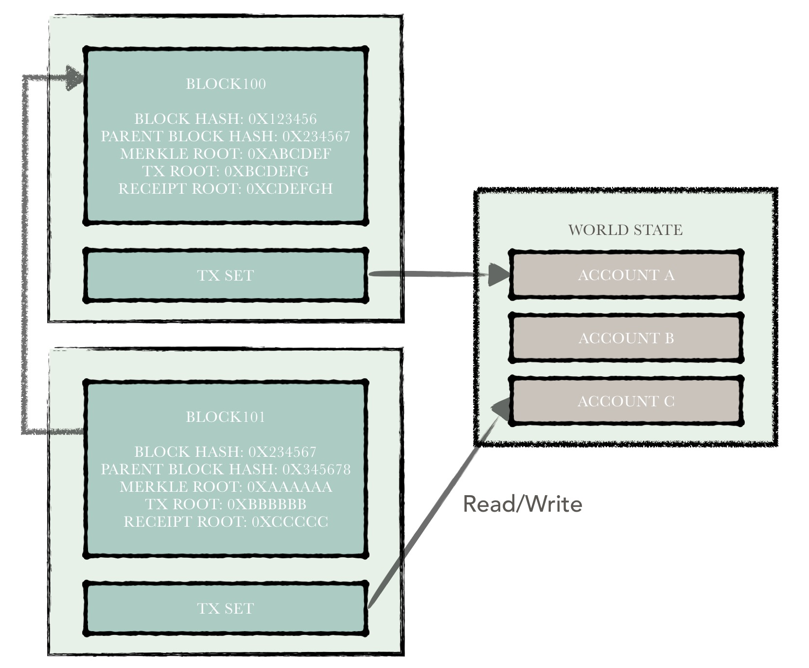
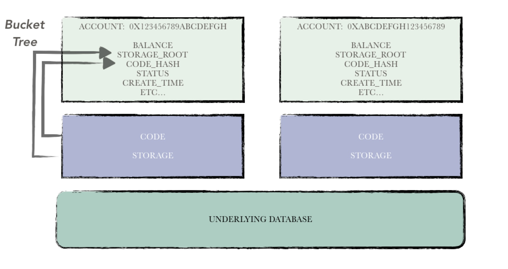
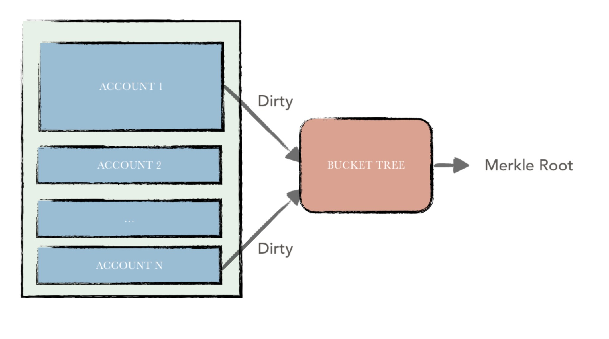

账本¶
1. 概述¶
账本是hyperchain平台中的重要模块，负责区块链账本数据的维护与组织。账本数据可以分成两部分：
- 区块链数据
- 账户数据
其中，区块链数据包括：区块、交易、回执等数据。这部分也就是我们传统意义上所说的区块链。而后者指代的是区块链上所有账户状态的集合，该状态集统称为世界状态。由于需要支持智能合约，因此hyperchain与以太坊一样，摒弃了比特币的UTXO模型而采用账户模型来组织数据，因而这部分数据称为账户数据。
区块链数据主要通过区块的形式进行串联。所有区块被从后向前有序地链接在一个链条里，每一个区块都指向其父区块。区块中包含了一批交易，由共识模块负责统一打包并定序。区块链节点在接收到一个区块之后，在原有的账户状态基础上，依次执行交易，在此期间读／写相关账户的状态数据。一笔交易执行结束，也就意味着区块链状态进行了一次变迁。
每一笔交易，在hyperchain中都会有一个对应的交易回执或者非法交易记录来表示最终的执行结果。倘若这笔交易是一笔合法的交易，则执行结束后，会将该交易执行的结果记录在交易回执中。反之，会将错误原因记录在一条非法交易记录中。
账本中各部分大体的逻辑关系可以如下图所示。

2. 区块链数据¶
在本章中，将介绍以下几种数据结构之间的关系：
- 区块
- 交易
- 回执
- 区块链
- 非法交易记录
其中前两类数据结构在区块链网路中组成了“区块链数据“，是区块链网络中进行流转的“共识”数据；后三类数据结构由各节点维护在本地。以上五种数据结构组成了一个节点中所有的区块链数据。
区块¶
区块结构可以分成两部分：
（1）区块头信息；
（2）区块体信息；
区块头中主要包含一些区块链的元数据，包括：（1）区块高度（2）区块哈希（3）父区块哈希（4）账户状态哈希（5）交易集哈希（6）回执集哈希（7）时间戳（8）日志过滤数据。
区块体内包含所有的交易数据。

区块的主要作用是封装交易数据，记录区块链状态数据。
交易¶
交易是由外部用户发起的，在交易体中记录了用户指定的调用信息。
交易根据是否执行智能合约可以分为两类：
- 普通交易；
- 合约交易；
- 合约部署
- 合约调用
前者表示交易执行过程中不触发智能合约的运行，仅进行hyperchain提供的token的转账；后者表示交易执行过程中会触发智能合约的运行。
后者又可以分为：（1）合约部署交易（2）合约调用交易。
交易体包含如下字段：
- 版本号：指明该交易数据结构定义的版本信息，便于向后兼容；
- 交易发起者：长度为20字节的交易发起者的标识信息；
- 交易接收者：长度为20字节的交易接收者的标识信息，若本交易是合约调用交易，该字段为被调合约的地址，若该字段为空，则表明本交易为部署合约交易；
- 调用信息：
- 若本交易为普通交易，在调用信息中指定需要转账的token数量；
- 若本交易为合约调用交易，在调用信息中指定需要调用的函数以及调用参数；
- 若本交易为合约部署交易，则需要在调用信息中指定合约的二进制代码；
- 随机值：uint64的随机值（避免产生哈希相同的交易，防止重放攻击）；
- 交易签名：用户利用自己的私钥对（1）交易发起者（2）交易接收者（3）调用信息（4）时间戳（5）随机值五个字段的内容进行签名，产生的签名内容填在该字段，防止交易的内容被篡改；
- 交易哈希：将上述（1）-（5）字段加上交易签名一起进行哈希计算，获得一个哈希标识用于表示本交易。
回执¶
每一笔合法的交易，其执行结果都会被封装成一个交易回执存储在区块链上。交易回执包括：
- 版本号：指明该回执数据结构定义的版本信息，便于向后兼容；
- 交易哈希：与该回执相关的交易哈希；
- 合约地址：若该交易为部署合约交易，则新部署的合约地址被放置在该字段，否则该字段为空；
- 执行结果：若该交易为调用合约交易，则执行结果被放置在该字段，否则该字段为空；
- 虚拟机日志：智能合约运行过程中，可能会产生一系列日志，这些日志数据被放置在该字段中；
- 智能合约类型：用于表示智能合约的类型，EVM，JVM或是其他类型；
非法交易记录¶
每一笔非法的交易，其错误信息会被封装成一个非法交易记录，存储在节点本地。
除了与之相关的交易数据，非法记录中还会记载具体的错误原因，例如：（1）余额不足（2）合约调用参数错误（3）调用权限不够等。
区块链¶
一个本地的节点会维护一些区块链元数据以便用户进行查询，因此在hyperchain中，有个名为chain的数据结构，记录了这些数据，包括：
- 最新父区块哈希
- 最新区块哈希
- 最新区块高度
- 创世区块高度（默认为0，数据归档／数据恢复等操作会影响该高度的值）
- 交易总数
- 额外数据
共识比较¶
区块链节点在执行完一个区块中所有的交易后，需要将本次区块处理得到的“结果”在节点间进行比较，只有大多数节点(超过quorum个)拥有与之相同的结果时，才会将本次执行结果提交到数据库中。
而表示本区块执行结果的标识是由以下几个内容组成：
- 世界状态哈希：交易执行过程中会更改账户状态数据，当一个区块中所有的交易执行结束后，会利用bucket tree对账户集合状态进行哈希重计算，计算结果便是世界状态哈希；
- 交易集哈希：利用区块中每一笔交易的重要字段作为sha256算法的输入，计算得到一个用于表示整个交易集的哈希标识。重要字段为：(1）交易发起者（2）交易接收者（3）调用信息（4）时间戳（5）随机值；
- 回执集哈希：利用区块中每一个回执的重要字段作为sha256算法的输入，计算得到一个用于表示整个回执集的哈希标识。重要字段为：（1）虚拟机执行计数器（2）执行结果（3）虚拟机执行日志；
3. 账户数据¶
之前提及的区块链数据，其实可以总结为是合约调用信息的流水集合。而智能合约在运行过程中，需要读／写合约状态数据。接下来就介绍这部分数据的组织结构。
由于hyperchain需要兼容EVM（Ethereum Virtual Machine），而EVM与以太坊的账户体系有着较强的耦合性，因此，hyperchain的state是在以太坊的基础上，做了一系列的改造及优化得到。
账户类别¶
与以太坊一样，hyperchain中的账户也可以分为两类：
- 外部账户：外部账户的私钥由用户自己控制，可以主动发起交易，且这类账户不包含智能合约代码
- 合约账户：合约账户包含一段可执行的智能合约代码，且有自己的存储空间用来存储自身的状态变量。该智能合约的运行可以由外部账户发起交易进行触发，也可以由其他合约“主动调用”进行触发。
虽然两类账户在逻辑上有所区别，但是共享一套定义：
一个账户的元数据包括以下字段：
- 账户地址（20字节，由哈希函数根据一定的输入产生，不考虑哈希冲突的情况下，不会有两个相同地址的账户）；
- 余额：该余额表示该账户所拥有的hyperchain平台的token个数，这类token可以通过智能合约进行操控，也可以通过发起普通交易转账进行交易；
- 状态变量（存储空间）哈希标识：一个合约账户，需要存储其所有的状态变量，一个用于表示这些状态变量的哈希值被存储在该字段；
- 合约代码哈希：智能合约代码哈希标识；
- 状态：合约状态，普通、冻结等；
- 部署时间：若该账户为合约账户，则会记录该账户第一次被部署的时间点；
- 创建者地址：若该账户为合约账户，则会记录该账户的创建者信息；
- 已部署的合约地址列表：若该账户为外部账户，则会记录该账户部署的所有合约账户的地址；

除了以上这些"简短"的数据被放置在账户元数据里，还有（1）合约源码（2）状态变量这些需要大量存储空间的数据被直接存储，在元数据中只存储这类数据的哈希值。
合约的状态变量，其实是一系列的kv键值对。在hyperchain中，每个合约账户，都会有一棵bucket tree，专门用来计算该合约的状态变量哈希。每次执行一笔交易，修改一系列状态变量，从底层来看，其实就是更新了一批kv对，而这些修改集刚好可以作为bucket tree的输入，以便快速地计算“新”的状态变量哈希。
账户集¶

hyperchain将每一个账户的元数据进行序列化，将序列化得到的二进制作为一个账户的内容。
所有的账户数据，最终可以转换成一系列的kv对，key为该账户的地址，value为元数据序列化的内容。
对于账户集，会有一棵全局级别的bucket tree进行账户数据的哈希计算，示意图如上所示。每个账户数据仅作为bucket tree中的一条数据项，不断进行哈希计算，最终生成一个根节点，该节点的哈希值（merkle root）便是整个账户集的哈希标识。
该哈希值作为整个账户集的状态表示，不仅是共识阶段比较的依据之一，之后更是会被记录在区块头中。
原子性¶
hyperchain利用底层数据库leveldb提供的batch来保障账本的原子性。hyperchain采用rbft作为共识算法，因此整个处理流程会分成3阶段来完成。在执行阶段，所有对账本的改动会预先保存在一个leveldb的batch中；当本次执行的结果得到了足够多节点的认可，会从缓存中取出该batch，将所有的修改落盘。